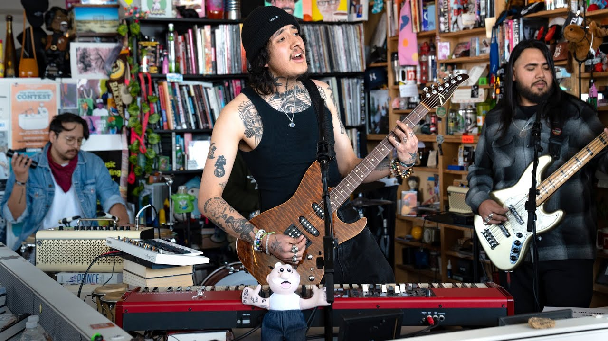

// moments
Visual Archive


para mi • para ti • para siempre
// the artist
Born on June 26, 1998, in Hawthorne, California, Cuco — whose real name is Omar Banos — grew up in a Mexican immigrant family that deeply influenced his identity and music.
Cuco is not just a musician, but a visionary artist who has built an entire sonic universe blending dream pop, psychedelia, and Chicano soul into something uniquely his own. From recording songs in his small bedroom in Hawthorne to performing on major stages like Coachella, his journey reflects the modern DIY spirit of Latinx indie music.
A self-taught multi-instrumentalist, Cuco can play the trumpet, guitar, keyboard, drums, and bass. He writes, arranges, and produces his own music, crafting dreamy soundscapes that blur the line between nostalgia and youthful melancholy.
His breakout single “Lo Que Siento” (2017) became a viral hit, introducing his bilingual romantic style to a global audience. Since then, he has released acclaimed projects like “Para Mi” (2019) and “Fantasy Gateway” (2022), expanding his sound while staying true to his heartfelt, homegrown roots.
// discography
// listen now
// moments